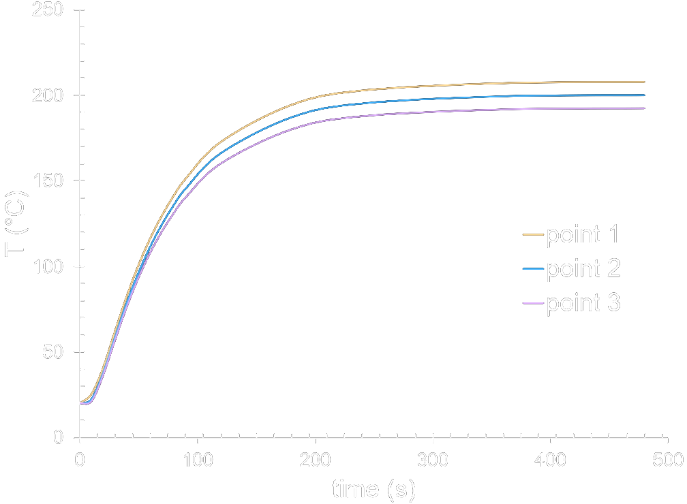
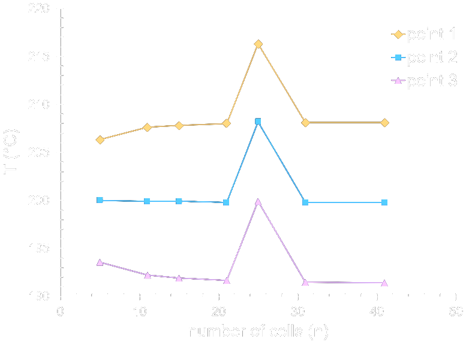

Numerical Heat Transfer Simulation
Project Description
The objective of this project was to create software to accurately simulate the transient heat transfer response across a thin rectangular plate subject to several prescribed boundary conditions. For this analysis, a 30cm x 30cm x 2cm plate of aluminum is placed in a room at STP conditions, and given the thickness of the plate used, 2D assumptions are valid. The boundary conditions at each of the edges are shown to the right in addition to insulating top and bottom surfaces (square faces) and a 20C starting temperature. The primary objective of this software is to be able to predict the temperature at any point on the surface of the plate with reasonable accuracy with minimal computational runtime needed.
Methods
Finite Difference Equations
Preliminary analysis shows a Biot number of Bi = 0.0017, but the non-trivial boundary conditions prevent a lumped capacitance approach to be used. Therefore, an explicit, 2D finite difference scheme is used to solve for the temperature at each node of the body. The edges are labelled A-D clockwise for analysis with A being the top edge shown. At each point (x,y) on the plate, the current temperature at time t = p is used in the equations on the left to compute the temperature at time t = p + 1. In generating these equations, it is noted that convergence can only be achieved for a Fourier number of Fo > 0.25 (see Equations 1a, 1c, and 1e)--based on the material and geometric properties of the system, this creates a minimum time step of dt = 55.1ms.
Simulation Convergence
The computation of this heat transfer simulation has two conflicting constraints: having an accurate solution while being fast to compute. In order to minimize the ammount of iterations needed to be performed to compute the final temperature distribution, the convergence of the system must be analyzed. This is done for the two major parameters of the system, the number of nodes along each edge of the plate (the total cells being equal to the (number of nodes)^2) and the time of evolution.
Transient Response
The steady state evolution was first explored with n = 11 nodes at various points on the surface of the plate. A time of t = 500s was determined to be sufficient for limiting computation while ensuring a steady state solution. In future analysis, with n = 41 and t = 600s, the average temperature change was estimated at dT/dt < 0.006 C/s with a temperature distribution changing by no more than 0.2C. Therefore, t = 500s was determined to be adequate for simulation runtime.
Mesh Independence
Using a runtime of t = 500s with various amounts of nodes, a similar analysis was performed to show that the results were mesh independent. For increasing mesh refinement, diminishing changes to the temperature distribution are shown and at n = 41 nodes (1,681 cells), the average temperature across the plate does not change with smaller cell sizes. See the "Transient Response" analysis to show that n = 41 and t = 500s ensure convergence.
Results
The final temperature distribution is shown to the right. This project involved the successful creation of software to compute the temperature distribution across an aluminum plate subjected to several complex boundary conditions. For this, a numercial heat transfer analysis was used to explicitly determine the temperature in each cell as time evolved. Analysis was conducted to determine that the solution's convergence was feasible given the cell size and time step, the runtime of the program was minimized for accurate results, and the results were independent of the meshing of the overall control volume. With this temperature distribution known, a bilinear interpolation can be created to create the color mapping shown.